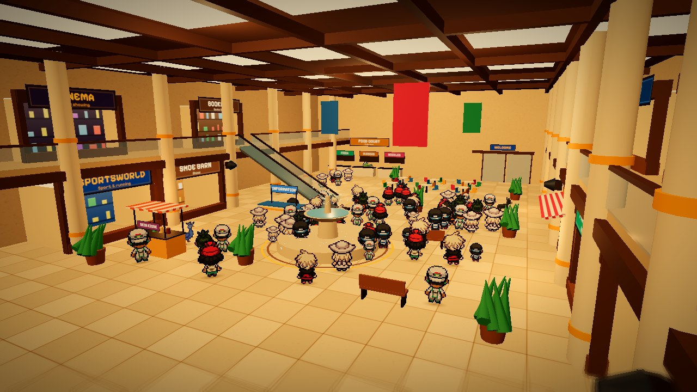
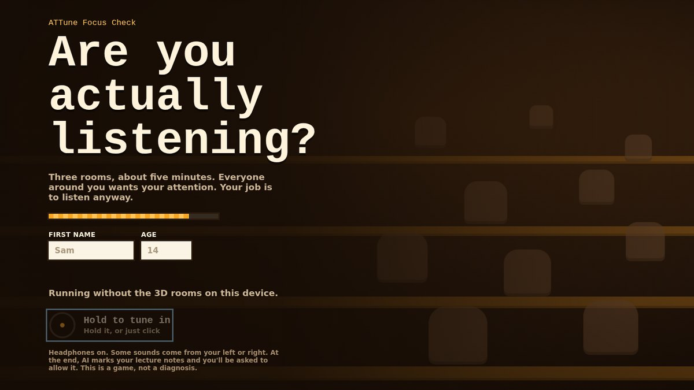

Themed worlds
Space, sky, fantasy and Jurassic, unlocked one at a time. The hand-drawn pixel art starts here and never leaves.
The archive
Every build and every version of this site is still up, in the order it was made. The point is that you can watch the idea narrow.
In development right now

level 01 · in testingThe current game. Level one of the listening levels, dressed in the new art style — the grey-box mall gets pixel people, a lamp-lit 3D room and a flash mob, with the same lines, questions and scoring underneath.
It is playable, but it is a trial build and it moves week to week. The audio and the visuals are both being tuned right now, against real testing rather than guesswork.
What you play today is not what will be here next month. That is the point of putting it up.
How it got here
From themed worlds you unlock, to listening in ordinary noisy rooms, to our first experiment in the new art style, to the prelim test as it stands today. Each one is still playable.
Space, sky, fantasy and Jurassic, unlocked one at a time. The hand-drawn pixel art starts here and never leaves.

Three rooms, five minutes, all audio and flat 2D rooms. The build where Attune stopped being about worlds and started being about listening. Still playable, exactly as it shipped.

Five places and three skill drills, deliberately drawn in grey so the listening could be tuned before any of it was dressed.

Our first experiment with the new art style. A lit 3D classroom with flat pixel classmates standing in it: listen to Mr Croc and tap whoever interrupts him. The grey boxes got their paint here, and the look the prelim test and the mall use today started in this room.

The same three stages rebuilt in the new art direction: textured 3D rooms with flat pixel characters, Derpy teaching with mouth frames that follow his voice, and all sixty-five lines re-recorded with real voices. This is the test people take now.
This website
Both versions are still served. The first one is frozen exactly as it shipped.

Near-black, heavy editorial type, screenshots of the grey-box builds. It said the right things about a game that had no paint on it yet.

Toys you can pick up, stickers, warm light. Built once the game knew it was for children rather than about them.
Credits
The classroom and mall renders use third-party models under Creative Commons Attribution. Credit where it is due: